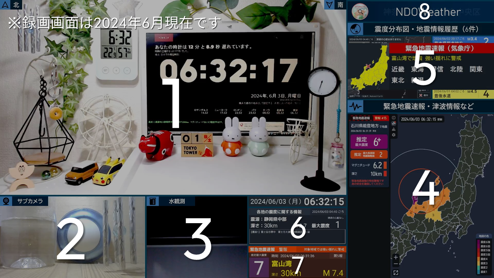

録画画面
録画画面の説明です。すぐに変わることが多いので参考程度に（）

1.メインカメラ（Logicool C920n）
2.サブカメラ（Logicool C270n）
3.水観測（Logicool C270n）
4.リアルタイム地震ビューアー（@kotoho76さん作成のソフト）
5.Quarog（@fuku121303さん作成のソフト）
6.EEWWarnMap（自作 未配布）
6.NDOLatestQuake（自作 未配布）
7.EEWNao（自作 未配布）
8.情報板（NDOWeatherの説明等）